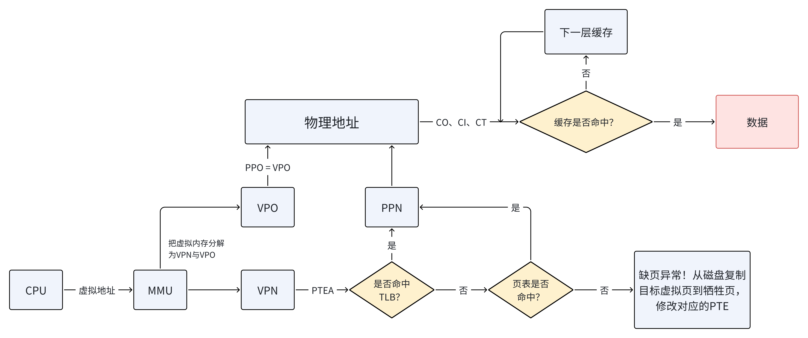
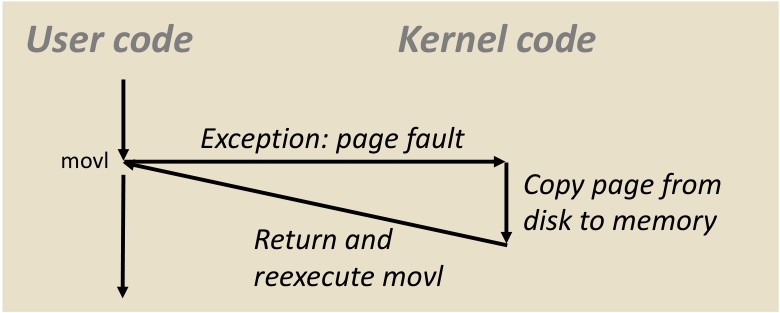
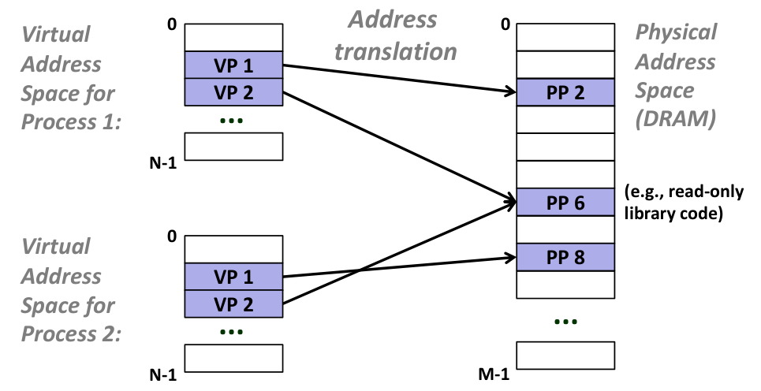
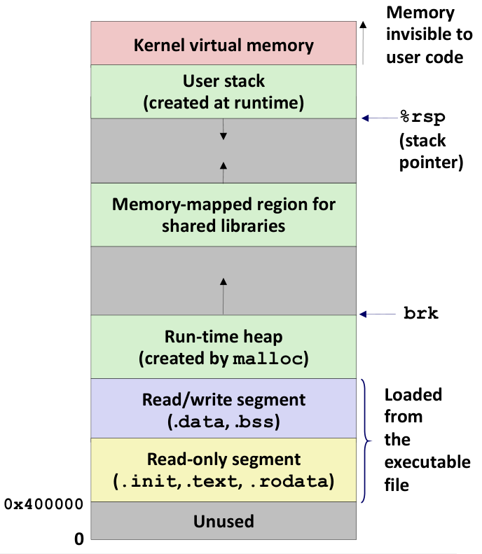
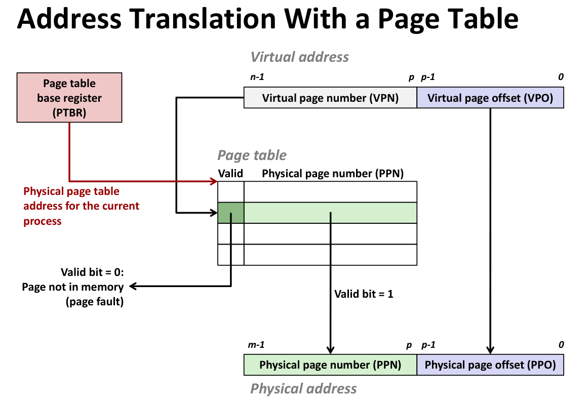
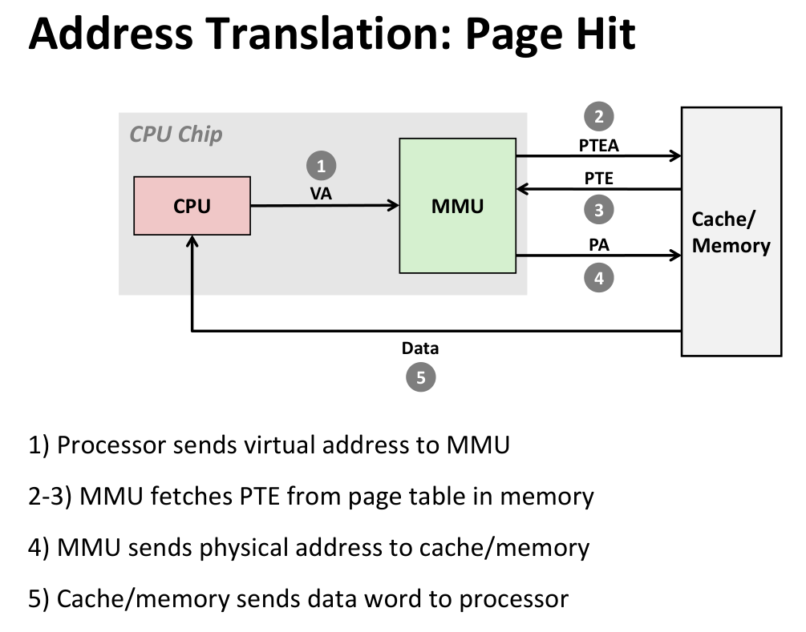
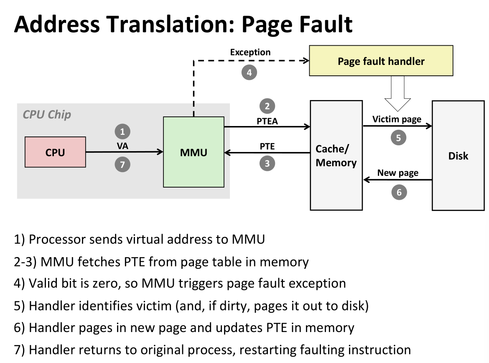

System IO
Unix I/O
Unix I/O 是操作系统内核提供的一组用于输入输出的低级系统调用接口。
核心概念
- 文件即字节序列：Linux 文件仅仅是 个字节的序列 ()。
- 万物皆文件：所有的 I/O 设备都被模型化为文件，包括：
- 网络、磁盘分区 (
/dev/sda2) - 终端 (
/dev/tty2) - 甚至内核数据结构 (
/proc)
- 网络、磁盘分区 (
- 统一接口：这种优雅的映射允许内核导出一个简单的 Unix I/O 接口来处理所有设备：
- 打开 (
open) / 关闭 (close) - 读 (
read) / 写 (write) - 改变当前文件位置 (
lseek)
- 打开 (
文件类型与目录层次
文件类型
- 普通文件 (Regular file)：包含任意数据。
- 文本文件：只包含 ASCII 或 Unicode 字符。
- Linux/Mac 换行符：
\n(0xa, LF) - Windows/网络协议换行符：
\r\n(0xd 0xa, CR+LF)
- Linux/Mac 换行符：
- 二进制文件：除文本文件外的所有文件（如目标文件、JPEG）。
- 注意：内核不区分文本和二进制，这是应用程序层面的区分。
- 文本文件：只包含 ASCII 或 Unicode 字符。
- 目录 (Directory)：包含一组链接的文件索引。
- 套接字 (Socket)：用于跨机器进程通信。
- 其他：命名管道 (FIFOs)、符号链接、字符/块设备。
目录操作
- 结构：目录也是文件，包含链接数组。
.(dot)：链接到当前目录。..(dot dot)：链接到父目录。
- 路径名：
- 绝对路径：以
/开头（如/home/droh/hello.c）。 - 相对路径：相对于当前工作目录 (cwd)。
- 绝对路径：以
- API：
opendir,readdir,closedir。建议只使用这些函数读取目录条目，不要直接写入。
Unix I/O
打开与关闭文件
open()：将文件名转换为文件描述符 (File Descriptor, fd)。- 返回一个小的整数 fd，若出错返回 -1。
- 标准文件描述符：
- 0: 标准输入 (stdin)
- 1: 标准输出 (stdout)
- 2: 标准错误 (stderr)
close()：通知内核结束访问。- 重要：必须检查返回值，即使是
close()也可能出错（尤其是在多线程程序中）。
- 重要：必须检查返回值，即使是
读写文件
read(fd, buf, sizeof(buf))：从当前文件位置复制字节到内存，并更新文件位置。- 返回读取的字节数 (
ssize_t)。 - 若返回 0，表示遇到 EOF (End of File)。
- 若返回 -1，表示出错。
- 返回读取的字节数 (
write(fd, buf, sizeof(buf))：从内存复制字节到文件当前位置，并更新位置。
Note
更新文件位置指的是当前文件偏移量 ” (Current File Offset)
当调用
read或write时，操作系统内核（Kernel）会在与该文件描述符 (fd) 关联的**打开文件描述（Open File Description）**表格中维护一个偏移量。
- 初始状态： 打开文件时（除非使用了
O_APPEND），偏移量通常为 0。- 自动累加：
- 如果你执行
read(fd, buf, 100)并成功读取了 100 字节，内核会自动将该偏移量加 100。- 下一次调用
read或write时，操作将从第 101 个字节开始。- 原子性： 这个更新过程是由内核管理的，对于调用者来说是透明且自动的。
短计数值
即读写的字节数小于请求的字节数 。
- 可能发生的情况：
- 读操作遇到 EOF。
- 从终端读取文本行。
- 读写网络套接字 (Network Sockets)。
- 绝不会发生的情况：
- 读磁盘文件（除非遇到 EOF）。
- 写磁盘文件。
- 最佳实践：编写代码时始终要处理短计数值，特别是在网络编程中。
文件元数据与共享
Metadata
struct stat 是内核向用户程序传递文件属性的标准容器。虽然不同架构的具体定义略有不同，但 POSIX 标准定义了以下核心字段。
| 字段类型 | 字段名 | 描述 | 关键用途 |
|---|---|---|---|
dev_t | st_dev | 包含该文件的设备 ID | 识别文件存储在哪个物理/逻辑设备上 |
ino_t | st_ino | Inode 编号 | 文件的唯一标识 (在同一设备内) |
mode_t | st_mode | 文件类型与权限 | 这是一个位掩码（Bitmask），非常重要 |
nlink_t | st_nlink | 硬链接计数 | 只有当此值为 0 时，文件数据块才会被释放 |
uid_t | st_uid | 所有者用户 ID | 权限检查依据 |
gid_t | st_gid | 所有者组 ID | 权限检查依据 |
off_t | st_size | 文件大小 (字节) | 仅对普通文件有效；符号链接则是路径长度 |
blksize_t | st_blksize | 文件系统 I/O 的最佳块大小 | 用于优化读写缓冲区大小 |
blkcnt_t | st_blocks | 分配的 512B 块数量 | 实际磁盘占用 (可能大于或小于 st_size，如稀疏文件) |
time_t | st_atime | 最后访问时间 (Access) | 最近一次 read 的时间 |
time_t | st_mtime | 最后修改时间 (Modify) | 最近一次文件内容被写入的时间 |
time_t | st_ctime | 最后状态改变时间 (Change) | 最近一次 元数据 (如权限、所有者) 改变的时间 |
st_mode 是一个 16 位的位图，它混合存储了文件类型和访问权限。不要直接比较它的值，而应该使用系统提供的宏。
1. 判断文件类型（高 7 位）：
使用宏 S_ISxxx(m) 进行判断：
S_ISREG(st.st_mode): 是否为普通文件 (-)S_ISDIR(st.st_mode): 是否为目录 (d)S_ISLNK(st.st_mode): 是否为符号链接 (l)S_ISSOCK(st.st_mode): 是否为套接字 (s)
2. 判断权限（低 9 位）：
对应 rwx (读/写/执行) 对于 User, Group, Others 的权限位。例如 S_IRUSR (用户读), S_IWGRP (组写) 等。
注意
mtimevsctime：
- 修改文件内容（
write）会同时更新mtime和ctime（因为文件大小变了，元数据也就变了）。- 修改文件权限（
chmod）只会更新ctime，不会更新mtime。
Chmod
chmod (Change Mode) 用于修改 struct stat 中的 st_mode 字段的低 9 位（即权限位）。它可以是 Shell 命令，也可以是 C 语言的系统调用。
场景 A：命令行 (Shell) 使用（最常用）
有两种模式：符号模式 (Symbolic) 和 八进制模式 (Octal)。
1. 八进制模式 (绝对赋值)
将权限看作 3 位二进制数（读=4, 写=2, 执行=1）。
-
格式：
chmod [XYZ] file- X: Owner, Y: Group, Z: Others
-
示例：
chmod 755 script.sh # rwxr-xr-x (拥有者全权，其他人只读执行) chmod 644 data.txt # rw-r--r-- (标准数据文件权限) chmod 600 key.pem # rw------- (私钥文件，仅拥有者可读写)
2. 符号模式 (增量修改)
更直观地增加或删除权限。
-
对象：
u(User),g(Group),o(Others),a(All) -
操作：
+(添加),-(删除),=(设置为) -
权限：
r,w,x -
示例：
chmod +x app # 给所有用户添加执行权限 (等同于 a+x) chmod u+w file.txt # 仅给拥有者添加写权限 chmod go-rwx secret # 移除组和其他人的所有权限
场景 B：C 语言系统编程 (chmod 函数)
在 C 语言中，使用 chmod 系统调用直接修改文件权限。这里不做展开。
内核如何表示打开的文件 (三张表)
这是理解文件共享和重定向的关键：
- 描述符表 (Descriptor table)：每个进程独有。
- 包含指向 ” 打开文件表 ” 表项的指针。
- 打开文件表 (Open file table)：所有进程共享。
- 包含：当前文件位置 (File pos)、引用计数 (refcnt)。
- 这意味着如果两个进程共享同一个打开文件表项，它们也共享文件读取位置。
- v-node 表 (v-node table)：所有进程共享。
- 包含：文件元数据（如
stat结构中的信息）。
- 包含：文件元数据（如
graph LR 1. 描述符表 subgraph DT ["描述符表"] direction TB subgraph ProcessA ["进程 A"] pa_fd1["fd 1 (stdout)"] pa_fd3["fd 3"] end subgraph ProcessB ["进程 B"] pb_fd1["fd 1 (stdout)"] end end 3. v-node 表 subgraph VNT ["v-node表"] subgraph VnodeX ["v-node X (文件 foo.txt)"] vn_info["文件大小: 2048 <br> 所有者: Root <br> 物理磁盘地址"] end end 场景 1: 共享 (例如通过 fork) pa_fd1 -->|指针| FileEntry1 pb_fd1 -->|指针| FileEntry1 连接到 v-node FileEntry1 -->|指针| VnodeX FileEntry2 -->|指针| VnodeX 样式定义 classDef dt fill:#e3f2fd,stroke:#1565c0,stroke-width:2px; classDef oft fill:#fff9c4,stroke:#fbc02d,stroke-width:2px; classDef vnt fill:#e8f5e9,stroke:#2e7d32,stroke-width:2px; 打开文件表 subgraph OFT ["打开文件表 (OFT)"] direction TB oe1["表项 #1 <br> Pos: 100 <br> ref: 1"] oe2["表项 #2 <br> Pos: 0 <br> ref: 1"] end 连接 fd3 --> oe1 fd4 --> oe2 oe1 --> vn oe2 --> vn 样式定义 classDef dt fill:#e3f2fd,stroke:#1565c0,stroke-width:2px; classDef oft fill:#fff9c4,stroke:#fbc02d,stroke-width:2px; classDef vnt fill:#e8f5e9,stroke:#2e7d32,stroke-width:2px; 打开文件表 subgraph OFT ["打开文件表 (OFT)"] oe["表项 [[Shared]] <br> Pos: 50 <br> ref: 2 (父+子)"] end 连接 p_fd3 --> oe c_fd3 --> oe oe --> vn 样式定义 classDef dt fill:#e3f2fd,stroke:#1565c0,stroke-width:2px; classDef oft fill:#fff9c4,stroke:#fbc02d,stroke-width:2px; classDef vnt fill:#e8f5e9,stroke:#2e7d32,stroke-width:2px; 打开文件表 subgraph OFT ["打开文件表 (OFT)"] oe_file["表项 [[File]] <br> (磁盘文件) <br> ref: 2"] oe_term["表项 [[Term]] <br> (屏幕终端) <br> ref: 0 (引用归零)"] end 连接 fd4 --> oe_file 应用样式 class DT dt; class OFT oft; class VNT vnt;
Standard I/O
C 标准库 (libc) 提供的更高级别的 I/O 函数 (stdio.h)。
- 流 (Stream)：标准 I/O 将打开的文件模型化为流。是一个指向
FILE类型的指针，是对 fd 和内存缓冲区的抽象。 - 缓冲 (Buffering)：
- 动机：Unix I/O 系统调用 (
read/write) 开销大（>10,000 时钟周期）。 - 机制：使用
printf或fputc时，数据先写入用户空间的缓冲区。只有当缓冲区满、遇到换行符 (\n)、调用fflush或程序结束时，才真正调用 Unixwrite写入内核。 - 问题：
strace追踪时会发现write调用次数远少于printf调用次数。
- 动机：Unix I/O 系统调用 (
| 特性 | 底层 I/O (Unbuffered) | 标准 I/O (Buffered) |
|---|---|---|
| 句柄类型 | int (文件描述符) | FILE * (文件流指针) |
| 打开 | open() | fopen() |
| 读/写 | read(), write() | fread(), fwrite(), fprintf(), fscanf() |
| 关闭 | close() | fclose() (会自动刷新缓冲区) |
| 主要位置 | <unistd.h> | <stdio.h> |
| 典型代表 | STDIN_FILENO (0) | stdin |
Important
和文件描述符的区别在于有没有 buffer。
graph TD ========================================== ========================================== subgraph US ["用户空间 (User Space)"] direction TB FILE 结构体 (C标准库) subgraph FILE_Struct ["FILE 结构体 (fp)"] direction TB ========================================== ========================================== SysWrite(("系统调用<br>write(3, buf, ...)")) 3. 内核空间 (Kernel Space) === 连接关系与数据流 === 变量控制缓冲 Vars -.->|管理| Buffer 3. 数据传入内核 FD_Holder -.->|提供 fd| SysWrite Content -->|数据搬运| SysWrite === 应用样式 === class US userSpace; class FILE_Struct structFile; class Content bufferBlock; class KS kernelSpace; class SysWrite sysCall;
Robust I/O
CS:APP 课程专门开发的 I/O 包 (csapp.c)，用于解决 Unix I/O 的短计数问题和标准 I/O 在网络编程中的局限性。
两种类型
- 无缓冲 RIO (Unbuffered RIO)：
rio_readn,rio_writen。- 用于二进制数据传输。
- 特性：自动处理短计数（循环调用
read/write直到完成），处理被信号中断 (EINTR) 的情况。 rio_writen保证写完所有字节；rio_readn仅在 EOF 时返回短计数。
- 带缓冲 RIO (Buffered RIO)：
rio_readinitb,rio_readlineb(读文本行),rio_readnb(读二进制)。- 特性：线程安全，带内部缓冲区，减少系统调用。
- 允许在同一个描述符上交叉调用
rio_readlineb和rio_readnb。 - 警告：不要将带缓冲 RIO 和无缓冲 RIO 混用在同一个描述符上。
应该使用哪种 I/O？
| 特性 | Unix I/O (open/read/write) | 标准 I/O (fopen/fprintf) | RIO (rio_readn/readlineb) |
|---|---|---|---|
| 抽象层级 | 低级 (系统调用) | 高级 (C 库) | 高级 (CS:APP 封装) |
| 缓冲 | 无 | 有 (用户级缓冲) | 有/无 可选 |
| 短计数处理 | 需手动处理 (麻烦且易错) | 自动处理 | 自动处理 |
| 元数据访问 | 支持 (stat) | 不支持 | 不支持 |
| 信号安全性 | Async-signal-safe (可在信号处理程序中使用) | 不安全 | 不安全 |
| 网络套接字 | 适用 | 不推荐 (流限制与套接字限制冲突) | 推荐 (专门设计) |
选用原则
- 首选高级 I/O：尽可能使用标准 I/O（处理磁盘/终端文件时），因为效率高且简单。
- 信号处理程序 (Signal Handlers)：必须使用 Unix I/O，因为它是异步信号安全的。
- 网络套接字 (Network Sockets)：
- 使用 RIO 或 Unix I/O。
- 避免使用标准 I/O 处理套接字（由于输入输出流的交互问题）。
- 二进制文件：
- 不要使用面向文本的函数（如
fgets,scanf,rio_readlineb），因为它们会错误解释0x00字节或换行符。 - 使用
rio_readn或rio_readnb。
- 不要使用面向文本的函数（如
Virtual Memory

为什么要使用虚拟内存？
虚拟内存是一层很关键的抽象：
- 它隐藏了物理内存的细节，为程序提供了一个抽象的、一致的内存视图。
- 它保证了每个进程地址空间的独立性，使得进程之间不会相互干扰。
- 可以分配超过物理内存的地址空间，充分利用物理内存（物理地址是唯一的，不能多次分配）
寻址模式与地址空间
- 物理寻址 (Physical Addressing):
- 机制： CPU 直接生成物理地址（PA）访问主存 。
- 应用场景： 简单的嵌入式系统、微控制器（如汽车控制、电梯、数字相框） 。
- 虚拟寻址 (Virtual Addressing):
- 机制： CPU 生成虚拟地址（VA），通过MMU（内存管理单元） 翻译成物理地址（PA）再访问主存 。
- 应用场景： 现代服务器、笔记本电脑、智能手机 。
- 地址空间的数学定义：
- 线性地址空间： 连续的非负整数地址集合 。
- 虚拟地址空间 (): 大小为 的集合 。
- 物理地址空间 (): 大小为 的集合 。
- 核心理念： 清晰区分了数据（字节）和它们的属性（地址），使得主存中的每个字节可以拥有一个物理地址和多个虚拟地址 。
虚拟内存
- 概念模型： 虚拟内存被视为存储在磁盘上的 个连续字节的数组，而物理内存（DRAM）是这个磁盘数组的缓存 。
- 任何时刻，虚拟内存的集合分为三个不相交的子集：
- 未分配的：完全没在虚拟内存中分配（用不到、省下来）
- 已分配的
- 已缓存的：已经在物理内存中缓存，不需要到硬盘去取
- 未缓存的：不在物理内存中缓存，需要到硬盘中取
- 页 (Page) 的结构：
- 磁盘上的数据块称为虚拟页 (VP)，内存中的缓存块称为**物理页 (PP) **或页帧 。
- 页大小 字节，通常为 4KB 。
- Linux 支持 “Huge Pages”（2MB 到 1GB） 。
- DRAM 缓存的特性（由巨大的性能差异决定）：
- 性能鸿沟： DRAM 比 SRAM 慢 10 倍，但磁盘比 DRAM 慢 10,000 倍 。从磁盘加载一个块需要 >1ms（百万个时钟周期） 。
- 全相联 (Fully Associative): 任何 VP 都可以放置在任何 PP 中，以最大限度利用内存 。(只有一个 set)
- 替换算法： 使用非常复杂、精密的替换算法（由操作系统软件实现），因为硬件无法处理这种复杂性 。
- 写策略： 必须使用写回 (Write-back) 而非直写，避免频繁写磁盘 。
- 页表 (Page Table):
- 是一个常驻内存（DRAM）的数据结构，每个进程独有 。
- PTE (Page Table Entry): 包含一个有效位 (Valid bit) 和物理页号/磁盘地址。
Valid=1: VP 缓存在 DRAM 中，地址字段指向物理页号 (PPN) 。Valid=0, Address!=null: VP 未缓存，地址字段指向磁盘位置 。Valid=0, Address=null: VP 未分配 。
缺页处理
Important
缺页异常是故障，是同步的，如果能从异常处理程序中恢复，则恢复到当前指令。
- 定义： 引用了不在物理内存中的虚拟页（即 DRAM 缓存未命中） 。
- 详细处理流程：
- 触发： 例如
movl指令访问地址0x8049d10，该页在磁盘上 。 - 异常： MMU 检测到 Valid 位为 0，触发缺页异常（Page Fault Exception） 。
- 陷入内核： 权限提升至监管者模式 (Supervisor Mode)，调用内核的缺页处理程序 。
- 驱逐 (Evict): 处理程序选择一个受害者页面（Victim Page），如果该页是脏的（Dirty），则将其写回磁盘 。
- 加载 (Page-in): 从磁盘复制新页面到内存中的物理页 。
- 更新： 更新内存中的 PTE（设置 Valid=1，更新 PPN） 。
- 恢复： 执行
iret指令返回，重新执行 导致缺页的那条movl指令 。
- 触发： 例如

- 按需调页 (Demand Paging): 直到发生未命中（Miss）时才将页面从磁盘复制到 DRAM 的策略 。
- 局部性与颠簸 (Locality & Thrashing):
- 工作集 (Working Set): 程序在任意时刻倾向于访问的一组活跃虚拟页 。
- 颠簸 (Thrashing): 当所有活跃进程的工作集总大小 > 物理内存大小时，页面不断被换入换出，导致性能 ” 熔断 ” 。
- 正常情况下，冷不命中之后，就会有很好的性能。
管理
- 核心机制：操作系统为系统中的每个进程都维护一个独立的页表 (Global Single Page Table → Per-Process Page Table)。 这提供了一个核心假象：每个进程都独占所有物理内存。
- 这一机制带来了四个主要简化：
- 简化链接 (Simplifying Linking)
- 机制：每个进程使用独立的地址空间，因此可以使用统一的内存格式（例如：代码段总是从 0x400000 开始）。
- 优势：链接器 (Linker) 的设计和实现被大大简化。它不需要考虑物理内存的实际位置，只需要生成基于标准虚拟地址 (VA) 的可重定位目标文件。
- 简化加载 (Simplifying Loading)
- 机制：加载器 (Loader) 不需要真正将数据从磁盘复制到内存。它只需分配虚拟页，并将页表条目 (PTE) 指向目标文件中对应的位置。
- 优势：这是 ” 按需调页 (Demand Paging)” 的基础。直到代码真正执行或数据被访问（即发生缺页异常）时，数据才会被拷贝到物理内存中。
- 简化共享 (Simplifying Sharing)
- 机制：一般情况下，不同进程的虚拟页映射到不同的物理页（通过独立的页表实现隔离）。
- 共享实现：操作系统可以将不同进程中适当的虚拟页映射到同一个物理页 (Physical Page)。
- 应用：
- 共享库 (如 libc.so) 的代码段只需在物理内存中存在一份，即可被多个进程共享。

- 共享库 (如 libc.so) 的代码段只需在物理内存中存在一份，即可被多个进程共享。
- 简化内存分配 (Simplifying Memory Allocation)
- 机制：当进程通过 malloc 请求一段连续的堆内存（如 k 个连续的虚拟页）时。
- 优势：操作系统可以在物理内存中随机分配 k 个不连续的物理页，然后通过页表将它们映射为连续的虚拟页。物理内存不需要连续，这消除了外部碎片的问题。
- 简化链接 (Simplifying Linking)
- 内存映射布局 (Linux 示例):
0x400000: 代码段 (.text) 起始位置 。- 栈 (Stack): 向下增长，由
%rsp指向，位于用户空间顶部（约0x7FFF…） 。 - 堆 (Heap): 向上增长，由
brk指针管理，通过malloc创建 。 - 共享库: 位于堆和栈之间的内存映射区域 。

- 加载器 (Loading):
execve在加载程序时，并未真正复制数据，只是分配了虚拟页并在页表中标记为 ” 无效 “。代码数据是在运行时通过缺页机制” 按需 ” 复制的 。
保护
- 机制： 在 PTE 中扩展权限位，MMU 硬件在每次访问时自动检查 。
- 常见权限位：
SUP: 是否需要内核（Supervisor）权限 。READ/WRITE: 读写权限 。EXEC: 执行权限（防止缓冲区溢出攻击执行数据段代码） 。
- 示例：
- 进程 i 的 VP 0:
SUP=No,READ=Yes,WRITE=No(只读数据)。 - 进程 i 的 VP 1:
SUP=No,READ=Yes,WRITE=Yes(读写数据)。
- 进程 i 的 VP 0:
- Linux Shell 一般报告为 Segmentation Fault
地址翻译硬件机制
-
-
参数符号：
- (虚拟地址空间), (物理地址空间), (页大小)。
-
地址分解：
- VA (虚拟地址): 被分为 VPN (虚拟页号) (Virtual page number) 和 VPO (虚拟页偏移)(Virtual page offset)。
- PA (物理地址): 被分为 PPN (物理页号) 和 PPO (物理页偏移)。
- 关键特性： 。因为页内偏移量在翻译过程中是不变的 。
-
硬件组件：
- PTBR (Page Table Base Register): 指向当前进程页表的物理基地址 。

命中 (Page Hit)
- 处理器生成一个虚拟地址 (VA)，并把它传送给 MMU。
- MMU 利用 PTBR 和虚拟地址中的 VPN 计算出该虚拟页对应的 PTEA。
- MMU 向高速缓存/主存发送这个 PTEA，请求读取页表项。
- 高速缓存/主存响应该请求，向 MMU 返回 PTE。
- MMU 读取 PTE，检查 有效位 为 1。 MMU 从 PTE 中提取 PPN，将其与原始的 VPO 拼接，构造出最终的 PA。
- MMU 将构造好的 PA 发送给高速缓存/主存。
- 高速缓存/主存读取 PA 处的内容，将所请求的 数据字 返回给处理器。
回忆： 页表是常驻在物理内存中的，所以请求页表一定会触发一次访存，且（此时）必然命中。

缺页 (Page Fault)
-
处理器生成虚拟地址 (VA) 并将其发送给 MMU。
-
MMU 利用页表基址寄存器 (PTBR) 和虚拟页号 (VPN) 计算出 PTEA。
- 公式：PTEA = PTBR + (VPN * PTE 大小)
- MMU 向高速缓存/主存发送这个 PTEA，请求读取对应的页表项。
-
高速缓存/主存向 MMU 返回请求的 PTE。
-
MMU 检查 PTE，发现 有效位为 0，因此触发缺页异常 (Page Fault Exception)，将控制权从 CPU 移交给内核的缺页处理程序。
-
缺页处理程序在物理内存中选择一个 牺牲页 (Victim Page)。如果该页是 ” 脏 ” 的 (Dirty，即被修改过)，则先将其写回磁盘。
-
缺页处理程序从磁盘将新页面调入物理内存，并更新内存中的 PTE (设置 Valid=1，填入新的 PPN)。
-
缺页处理程序返回到原来的进程，重启导致缺页的那条指令 (此时再次执行步骤 1，将会命中)。
回忆： 页表是常驻在物理内存中的，所以请求页表一定会触发一次访存，且（此时）必然命中。但是，页表在不代表页在。

术语表
| 符号 | 全称 (Full Name) | 中文含义 | 详细解释与功能 |
|---|---|---|---|
| PTBR | Page Table Base Register | 页表基址寄存器 | 指向当前进程页表在物理内存中的起始位置。CPU 使用它来定位页表。 |
| PTEA | Page Table Entry Address | 页表项地址 | 這是指向特定 PTE 的物理地址。MMU 通过结合 PTBR 和虚拟页号 (VPN) 计算出 PTEA，从而在内存中找到对应的页表项。 |
| PTE | Page Table Entry | 页表项 | 页表中的一个条目（数组元素）。它包含物理页号 (PPN) 和有效位 (Valid bit) 等控制信息。 |
| PA | Physical Address | 物理地址 | 最终发送给主存（DRAM）的地址。它由物理页号 (PPN) 和物理页偏移 (PPO) 拼接而成。 |
| PPN | Physical Page Number | 物理页号 | 物理地址的高位部分。它存储在 PTE 中（如果 Valid=1），表示虚拟页被映射到了物理内存的哪一页。 |
| VPO | Virtual Page Offset | 虚拟页偏移 | 虚拟地址的低位部分。它表示数据在页面内的偏移量。在地址翻译过程中，VPO 直接变为物理页偏移 (PPO)，即 VPO = PPO。 |
| PPO | Physical Page Offset | 物理页偏移 | 物理地址的低位部分。它与 VPO 完全相同，无需翻译，直接从虚拟地址复制而来。 |
它们在地址翻译流程中的关系
- VA (虚拟地址) 被拆分为 VPN (虚拟页号) 和 VPO。
- PTBR 指向页表开头，结合 VPN 计算出 PTEA。
- MMU 访问内存地址 PTEA，读取 PTE。
- 如果 PTE 有效，MMU 从中提取 PPN。
- PPN 与原始的 VPO (即 PPO) 拼接，形成最终的 PA。
graph TD 关系连线 PTBR -->|"提供基址"| Calc_PTEA VPN -->|"作为索引"| Calc_PTEA Calc_PTEA -->|"指向内存地址 (PTEA)"| Memory_Access Memory_Access -->|"读取内容"| PTE_Content PTE_Content -->|"提取 (如果 Valid=1)"| PPN VPO -->|"直接复制 (无需翻译)<br>VPO = PPO"| PPO PPN --> Final_PA PPO --> Final_PA
TLB
Translation Lookaside Buffer
Important
计算步骤 TLB (页表缓存) Cache (数据缓存) 输入参数 1. TLB 总项数 () 2. 相联度 () 3. VPN 总位数 1. 缓存总容量 () 2. 块大小 () 3. 相联度 () 4. 物理地址总位数 第一步：算 Offset 无 (TLB 不处理 Offset，直接旁路) (由块大小决定) 第二步：算组数 (Sets)
(总条目 / 路数) |
(总容量 / 一行的大小) | | 第三步：算 Index |
|
|| 第四步：算 Tag |
\mathrm{Tag} = \text{PA} - \text{Index} - \text{Offset} $$ | * **动机：** 每次普通的地址翻译都需要一次额外的内存访问（读取 PTE），导致指令执行变慢 。 * **定义：** MMU 内的一个小型、全相联或组相联的硬件缓存，专门用于存储 ==VPN 到 PPN 的映射== 。 * 加速从 VPN 到 PPN 的映射速度。 * **TLB 寻址：** * 将 VPN 进一步拆分为 **TLB Tag (TLBT)** 和 **TLB Index (TLBI)** 。 * $T = 2^t$ 组，TLBI 用于选择组，TLBT 用于匹配组内的行 。 * **性能影响：** * **TLB Hit:** 消除了一次内存访问，直接得到 PPN 。 * **TLB Miss:** 需要访问内存获取 PTE，然后更新 TLB。所幸由于局部性，Miss 很少见 。 ```mermaid graph TD ================= 1. 虚拟地址输入 ================= subgraph Virtual_Address ["虚拟地址 (VA) 分解"] direction TB subgraph VPN_Group ["VPN (虚拟页号)"] TLBT("TLBT<br>TLB 标记"):::addrBit TLBI("TLBI<br>TLB 索引"):::addrBit end VPO("VPO<br>虚拟页偏移"):::addrBit end TLB 逻辑 subgraph TLB_Logic ["TLB (快表)"] Lookup["利用 TLBI<br>选择组 Set"]:::fastPath TagCheck{"TLBT<br>匹配 Tag?"}:::fastPath HitOrMiss{"Valid=1<br>& 命中?"}:::fastPath end ================= 3. 内存处理 (Miss 路径) ================= subgraph Physical_Memory ["物理内存 (页表)"] direction TB PTBR["PTBR<br>页表基址"]:::memory PageTable["页表查询<br>PTE Access"]:::memory Mem_PPN("从内存<br>读取 PPN"):::memory end ================= 连线逻辑 ================= --- 2. 内存慢速路径 (Miss) --- HitOrMiss -. "No (Miss)" .-> PTBR VPN_Group -.-> PageTable PTBR -.-> PageTable PageTable -.-> Mem_PPN Mem_PPN -. "更新 TLB" .-> Extracted_PPN --- 4. 结果合成 --- Final_PPN --> PA_Out PPO --> PA_Out 样式定义 classDef vaPart fill:#d5e8d4,stroke:#82b366,stroke-width:2px; classDef tableAction fill:#dae8fc,stroke:#6c8ebf,stroke-width:2px; classDef result fill:#fff2cc,stroke:#d6b656,stroke-width:2px; classDef final fill:#e1d5e7,stroke:#9673a6,stroke-width:3px; subgraph Virtual_Address ["虚拟地址 (VA) 被切分"] direction LR VPN1("VPN 1<br>(用于L1)"):::vaPart VPN2("VPN 2<br>(用于L2)"):::vaPart VPO("VPO<br>(偏移量)"):::vaPart end 第二跳 subgraph Step2 [第二跳：查二级页表] L2_Lookup[("查找 L2 表")]:::tableAction Get_PPN("获得: 物理页号 (PPN)"):::result end 连线 PTBR --> L1_Lookup VPN1 -->|"索引"| L1_Lookup L1_Lookup --> Get_L2_Base Get_L2_Base -->|"指向L2开头"| L2_Lookup VPN2 -->|"索引"| L2_Lookup L2_Lookup --> Get_PPN Get_PPN --> Final_PA VPO -->|"直接拼接"| Final_PA ``` > [!important] > > > 每一级页表就是一个 $1:2^9$ 的放大器。 > > 一个页表的大小通常是 4KB ($2^{12}$ 字节)。每个页表项 (PTE) 是 8 字节 ($2^3$)。 因此，一个页表可以包含 $2^{12} / 2^3 = 2^9 = 512$ 个条目。 所以，需要 9 位索引来定位这 512 个条目中的某一个。 > > 最底层页表恒定为 4kb，对应的物理内存是 4kb。 > > 每一级页表的大小为 4kb，可以存放 512 个条目（PTE）。 > [!note] > > > ### 核心逻辑流 >|
\mathrm{VA总位数} \xrightarrow{\text{减去}} \text{页内偏移} \xrightarrow{\text{得到}} \text{VPN总位数} \xrightarrow{\text{除以}} \text{每级索引位数} \xrightarrow{\text{得到}} \textbf{页表级数}
> > ------ > > ### 详细计算步骤 > > #### 第一步：求 " 页内偏移位数 " (Offset) > > 逻辑：页大小决定了我们需要多少个 bit 来在页内寻址。 > > 公式：$\log_2(\text{页大小})$ > > * *例子*：$4\text{KB} = 2^{12}$，所以 Offset $= 12$ 位。 > > #### 第二步：求 "VPN 总位数 " > > 逻辑：虚拟地址中，除了页内偏移，剩下的全是用来查表的。 > > 公式：$\text{VA位数} - \text{Offset}$ > > * *例子*：$39 - 12 = 27$ 位。 > > #### 第三步：求 " 每级页表索引位数 " (Index Width) > > 逻辑：一个物理页（作为页表）能存多少个 PTE？这就决定了一级能索引多大范围。 > > 公式：$\log_2(\text{页大小} / \text{PTE大小})$ > > * *例子*：$4\text{KB} / 8\text{B} = 512 = 2^9$，所以每级索引 $= 9$ 位。 > > #### 第四步：求 " 页表级数 " (Levels) > > 逻辑：看 VPN 总位数需要切几刀才能被 " 每级索引位数 " 消化完。 > > 公式：$\text{VPN总位数} / \text{每级索引位数}$ > > * *例子*：$27 / 9 = 3$ 级。 ## 简单内存系统示例 为了深入理解地址翻译的流程，我们来看一个具体的简化内存系统示例。 ### 1\. 系统参数 * **虚拟地址 (VA):** 14 位 * **物理地址 (PA):** 12 位 * **页大小 (Page Size):** 64 字节 ($2^6$)  **地址划分：** * **虚拟地址分解 (14 bits):** * **VPO (Virtual Page Offset):** 低 6 位 (与页大小一致)。 * **VPN (Virtual Page Number):** 高 8 位 (14 - 6)。 * **物理地址分解 (12 bits):** * **PPO (Physical Page Offset):** 低 6 位 (与 VPO 相同)。 * **PPN (Physical Page Number):** 高 6 位 (12 - 6)。 ### 2\. 硬件结构 **TLB (Translation Lookaside Buffer):** * **配置:** 16 个条目，4 路组相联 (4-way associative)。 * **组数 (Sets):** $16 / 4 = 4$ 组。 * **索引:** * **TLBI (Index):** 2 位 (选择 4 个组之一)。 * **TLBT (Tag):** 6 位 (VPN 的剩余高位: 8 - 2)。  **Cache (L1):** * **配置:** 16 行 (Lines)，块大小 4 字节，直接映射 (Direct mapped)。 * **组数 (Sets):** 16 组 (因为是直接映射，行数即组数)。 * **索引:** * **CO (Block Offset):** 2 位 ($2^2=4$ 字节)。 * **CI (Index):** 4 位 ($2^4=16$ 组)。 * **CT (Tag):** 6 位 (PA 剩余位: 12 - 4 - 2)。  ### 3\. 地址翻译实例 #### 案例 A: TLB 命中，Cache 命中   #### 案例 B: TLB 未命中，Cache 未命中   ## Intel Core i7/Linux 内存系统 ### 1\. 硬件结构 (Core i7) Intel Core i7 采用了复杂的层次化内存架构： * **处理器包 (Package):** 包含 4 个核心。 * **缓存层次:** * **L1:** 每个核心独享，分为指令缓存 (i-cache) 和数据缓存 (d-cache)，通常 32KB，8 路组相联。 * **L2:** 每个核心独享，256KB，8 路组相联。 * **L3:** 所有核心共享，8MB，16 路组相联。 * **MMU (内存管理单元):** * **L1 TLB:** 分离的 i-TLB (128 条目) 和 d-TLB (64 条目)。 * **L2 TLB:** 统一 TLB (512 条目)。  ### 2\. 4 级页表结构 Core i7 使用 4 级页表层次结构来支持 48 位的虚拟地址空间。  * **CR3 寄存器:** 指向一级页表 (L1 Page Table, 或 PGD) 的物理基址。 > [!important] > > > 注意每一个进程都有自己的物理基址，切换进程会改变 CR3 的值。 > > CR3 里存的一定是**物理地址 (Physical Address)**。 > > **进程切换的性能成本：** 当 OS 切换进程（上下文切换）时，必须更新 CR3 寄存器。这会导致 CPU **隐式冲刷（清空）TLB**（除非使用 PCID 特性）。 > > **后果**：切换后的短时间内，新进程会面临大量的 **TLB Miss**，导致性能暂时下降（不得不去内存漫游），直到 TLB 重新被填满（Warm up）。 * **层级:** 1. **PGD (Page Global Directory):** 索引 VPN1 (9 位)。 2. **PUD (Page Upper Directory):** 索引 VPN2 (9 位)。 3. **PMD (Page Middle Directory):** 索引 VPN3 (9 位)。 4. **PT (Page Table):** 索引 VPN4 (9 位)。  * **PTE 关键位 (Page Table Entry Bits):** * **P (Present):** 页是否在内存中。 * **R/W (Read/Write):** 读写权限 (0=只读)。 * **U/S (User/Supervisor):** 用户/内核模式权限 (0=仅内核)。 * **WT (Write-Through):** 写透或写回策略。 * **A (Accessed):** 引用位 (用于替换算法)。 * **D (Dirty):** 脏位 (仅在 L4 PTE 中，表示页面被修改过)。 * **XD (Execute Disable):** 禁止执行位 (防止缓冲区溢出攻击)。  ### 3\. L1 Cache 的访问优化 * **问题:** 地址翻译 (VA -\> PA) 和 L1 Cache 访问 (使用 PA) 是串行的，可能很慢。 * **技巧:** **虚拟索引，物理标记 (Virtually Indexed, Physically Tagged, VIPT)**。 * **原理:** * 虚拟地址的 VPO (页内偏移) 和物理地址的 PPO 是完全相同的。 * L1 Cache 的索引位 (CI) 通常完全包含在 VPO 的范围内。 * 因此，CPU 可以**并行**地进行 TLB 查找 (获取 PPN) 和 L1 Cache 索引 (使用 VPO 中的位作为 CI)。 * 当 TLB 返回 PPN (即 CT) 时，Cache 刚好读出 Tag，两者进行比较确认是否命中。  > ### 虚拟地址寻址的 Cache (Virtual Cache) > > * **概念:** Cache 的索引和标记都使用虚拟地址 (VIVT)。 > * **优点:** 速度最快，完全不需要等待 TLB。 > * **缺点/问题:** > 1. **同名异物 (Homonyms):** 不同进程的相同虚拟地址映射到不同物理地址。切换进程时需清空 Cache。 > 2. **异名同物 (Synonyms/Aliasing):** 多个虚拟地址映射到同一物理地址（如共享内存）。会导致 Cache 中存在多份数据副本，引发一致性问题。 > * **实例:** 早期的 MIPS R4000 或 StrongARM 处理器曾使用 VIVT，但现代处理器多采用 VIPT。 ## Linux 虚拟内存系统  ### 1\. 进程的虚拟内存区域 Linux 将虚拟内存组织为一系列的 " 区域 (Areas)" 或 " 段 (Segments)"。 * **`task_struct`:** 内核中表示进程的数据结构。 * **`mm_struct`:** 描述虚拟内存状态。 * `pgd`: 指向一级页表基址。 * `mmap`: 指向 `vm_area_struct` 链表的指针。 * **`vm_area_struct`:** 描述一个连续的虚拟内存区域 (如代码段、数据段、共享库、栈)。 * `vm_start`, `vm_end`: 区域的起始和结束地址。 * `vm_prot`: 读/写/执行权限。 * `vm_flags`: 共享/私有等标志。  ### 2\. Linux 缺页异常处理流程 当发生缺页异常时，内核处理程序执行以下步骤： 1. **地址合法性检查:** * 访问的虚拟地址是否在某个 `vm_area_struct` 定义的区域内？ * 如果不在 -\> **Segmentation Fault** (段错误)。 2. **权限检查:** * 进程是否有权限进行该操作 (如写只读页面)？ * 如果无权限 -\> **Protection Exception** (保护异常，也报告为 Segmentation Fault)。 3. **合法缺页处理:** * 如果通过以上检查，说明是合法的缺页。 * 选择牺牲页 (Victim)，换出 (如果脏)，换入新页，更新页表。  ## 内存映射 ### 内存映射的概念 内存映射 (Memory Mapping) 是将虚拟内存区域与磁盘上的对象关联起来的过程。 * **映射对象类型:** * **普通文件 (Regular File):** 文件的一段连续字节 (如可执行文件)。 * **匿名文件 (Anonymous File):** 由内核创建的全 0 区域 (如堆、栈)。首次访问时分配物理页并清零 (Demand-zero page)。 ### 共享对象与私有对象 * **共享对象 (Shared Objects):** * 使用 `MAP_SHARED` 标志。 * 多个进程映射同一个对象，共享相同的物理页面。 * 一个进程的修改对其他进程**可见**。 * **私有写时复制对象 (Private Copy-on-write Objects):** * 使用 `MAP_PRIVATE` 标志。 * **COW (Copy-On-Write) 机制:** * 两个进程最初共享相同的物理页面，但在页表中标记为**只读**。 * 当任一进程尝试**写**该页面时，触发保护故障。 * 内核在物理内存中创建该页面的**新副本**，更新页表指向新副本，并恢复写权限。 * **优势:** 尽可能推迟拷贝，节省内存。 ### `fork` 和 `execve` * **`fork()`:** * 不复制物理内存。 * 复制父进程的 `mm_struct`, `vm_area_struct` 和页表。 * 将两个进程的所有页面都标记为 **只读 (Read-only)**。 * 将两个进程的所有区域都标记为 **私有写时复制 (Private COW)**。 * **`execve()`:** * 删除当前进程的所有旧用户区域。 * 映射新的私有区域 (代码、数据)。 * 映射新的匿名区域 (bss、栈)。 * 设置 PC 指向入口点。 ### 用户级内存映射 (`mmap`) 应用程序可以使用 `mmap` 系统调用手动创建映射。 ```c void *mmap(void *start, size_t length, int prot, int flags, int fd, off_t offset); ``` * **参数:** * `prot`: `PROT_READ`, `PROT_WRITE`, `PROT_EXEC`. * `flags`: `MAP_ANON`, `MAP_PRIVATE`, `MAP_SHARED`. * **用途:** * 读取大文件 (避免读入用户缓冲区)。 * 实现高性能的共享数据结构。 * 在 Attack Lab 中分配可执行的内存区域。 # Dynamic Memory Allocation ## 1. 基础概念 (Basic Concepts) ### 1.1 动态内存分配器的作用 程序员在运行时使用动态内存分配器（如 `malloc`）获取虚拟内存。分配器管理进程虚拟内存中的**堆 (Heap)** 区域。 * **分配器类型**： * **显式分配器 (Explicit Allocator)**：应用显式地分配和释放空间（如 C 语言的 `malloc` 和 `free`）。 * **隐式分配器 (Implicit Allocator)**：应用只负责分配，由分配器（垃圾回收器）负责释放（如 Java 的 `new` 和 Garbage Collection）。 ### 1.2 堆的结构 * 堆是向高地址增长的区域，通常位于未初始化数据段（.bss）之上，用户栈之下。 * 内核维护一个变量 `brk` (break)，指向堆的顶部。 * 分配器将堆视为一组不同大小的**块 (blocks)**，每个块要么是**已分配的 (allocated)**，要么是**空闲的 (free)**。 ### 1.3 `malloc` 接口 (C 语言) > [!warning] > > > 按照**字节**==byte==的粒度存储 * `void *malloc(size_t size)`: * 成功：返回指向至少 `size` 字节的内存块指针，通常按 **16 字节对齐** (x86-64)。 * ==注意使用前需要初始化== * 失败：返回 NULL 并设置 `errno`。 * `void free(void *p)`: 将 `p` 指向的块返回给空闲池。`p` 必须是之前 `malloc/calloc/realloc` 的返回值。 * `sbrk()`: 分配器内部用于扩展或收缩堆的系统调用。 > [!note] > > > `calloc`:`malloc` 获得块之后初始化为 0 > > `readlloc`：更改之前已经分配的块的大小 --- ## 2. 性能目标与碎片 (Performance & Fragmentation) ### 2.1 性能指标 分配器需要在两个相互冲突的目标之间寻找平衡： 1. **吞吐率 (Throughput)**：单位时间内完成的请求（malloc/free）数量。 2. **内存利用率 (Memory Utilization)**：峰值利用率 = (所有已分配块的有效载荷总和) / (当前堆的大小)。 ### 2.2 碎片 (Fragmentation) 碎片是导致内存利用率低下的主要原因。 * **内部碎片 (Internal Fragmentation)**： * 定义：已分配块的大小 > 有效载荷 (Payload) 的大小。 * 原因：对齐要求（Padding）、维护堆所需的数据结构（Header/Footer）、分配策略决策。 * 特点：仅取决于之前的请求模式，易于测量。 ```mermaid block-beta block:Container columns 4 样式设置 style Header fill:#ffcccc,stroke:#333 style Payload fill:#ccffcc,stroke:#333 style Padding fill:#888888,stroke:#333,color:#fff style Footer fill:#ffcccc,stroke:#333 ``` * **外部碎片 (External Fragmentation)**： * 定义：堆中总空闲内存足够满足请求，但没有单个连续的空闲块足够大。 * 特点：取决于未来的请求模式，难以测量。 ```mermaid graph TD 布局连接 B1 ~~~ F1 ~~~ B2 ~~~ F2 end Req(新请求: 300):::request 样式定义 classDef header fill:#ffcccc,stroke:#333,stroke-width:2px; classDef payload fill:#ccffcc,stroke:#333,stroke-width:2px; classDef padding fill:#eeeeee,stroke:#333,stroke-width:2px; classDef unused fill:#ffffff,stroke:#333,stroke-width:2px,stroke-dasharray: 5 5; subgraph Allocated ["Allocated Block"] direction TB H1["Header (头部): 块大小 | a=1"]:::header P1["Payload (有效载荷): 用户数据"]:::payload Pad1["Padding (填充): 对齐用"]:::padding end subgraph Free ["Free Block"] direction TB H2["Header (头部): 块大小 | a=0"]:::header U2["Unused (未使用空间)"]:::unused end 定义样式 classDef packet fill:#4cc9f0,stroke:#3a0ca3,color:white,rx:5,ry:5; classDef fullQueue fill:#ffd166,stroke:#ef476f,stroke-width:2px,stroke-dasharray: 5 5; classDef dropped fill:#ef476f,stroke:#590d22,color:white,stroke-width:2px; classDef routerBox fill:#f8f9fa,stroke:#adb5bd,stroke-width:2px; subgraph NetworkFlow ["网络数据流向 (纵向视图)"] direction TB 2. 中间：路由器逻辑 subgraph Router ["🖧 路由器 Router"] direction TB InputPort(("⬇️ 入端口")) 缓冲区 (内部保持横向排列，像一个储物架) subgraph Buffer ["缓冲区 / 队列 (已满!)"] direction LR P3["排队包 3"] --- P2["排队包 2"] --- P1["排队包 1"] end Processor(("⬇️ 转发处理")) end 4. 底部：下一跳 NextHop["💻 下一跳 / 接收端"] 核心逻辑：溢出则丢弃 Check -- "没有 (溢出!)" --> Trash Check -- "有 (入队)" --> Buffer Buffer -- "从队首取出" --> Processor Processor -- "低速输出 (10 Mbps)" --> NextHop end 样式定义 classDef pc fill:#e0fbfc,stroke:#3d5a80,stroke-width:2px; classDef router fill:#f8f9fa,stroke:#adb5bd,stroke-width:2px,stroke-dasharray: 5 5; classDef process fill:#98c1d9,stroke:#3d5a80,color:black; classDef decision fill:#ffd166,stroke:#ee6c4d,color:black,rx:5,ry:5; classDef queue fill:#e0e1dd,stroke:#3d5a80,stroke-width:2px; classDef drop fill:#ef476f,stroke:#7209b7,color:white,stroke-width:4px; classDef success fill:#06d6a0,stroke:#073b4c,color:white; --- 2. 传输链路 --- NIC == "光纤/网线传输" ==> R_Input 查表后，决定去哪个出口 R_Lookup -- "去往出口A" --> R_BufferCheck{"检查缓冲区<br>(满了吗?)"} 丢包分支 R_BufferCheck -- "已满 (Yes)" --> DropNode("💥 丢包 (Drop)") --- 4. 接收端 --- subgraph HostB ["🖥️ 接收主机 (Host B)"] direction TB NIC_B("网卡<br>(接收)") --> OS_B("操作系统<br>(重组/检查)") OS_B --> App_B("应用程序<br>(显示内容)") end 应用样式 class HostA,HostB pc; class Router router; class App,OS,NIC,R_Input,R_Output,NIC_B,OS_B,App_B,Enqueue,Dequeue process; class R_Lookup,R_BufferCheck decision; class Memory queue; class DropNode drop; class App_B success; ``` --- ### 4. 网络性能指标 #### 4.1 节点总延迟 (Packet Delay) 一个节点的总延迟 ($d_{\text{nodal}}$ ) 由四部分组成： 1. **处理延迟 ($d_{proc}$)** * 检查分组首部是否有比特错误、确定输出链路等。 * 通常为微秒级。 2. **排队延迟 ($d_{queue}$)** * 分组在输出队列中等待发送的时间。 * 取决于当前网络**拥塞程度**，流量接近带宽时排队延迟急剧增加。 3. **传输延迟 ($d_{trans}$)** * 把分组的所有比特 " 推上 " 链路所需时间。 * 公式：$d_{\text{trans}} = \frac{L}{R}$ * ( L )：分组长度（比特数） * ( R )：链路带宽（比特/秒） 4. **传播延迟 (d_prop)** * 比特在介质中传播所需时间。 * 公式：$d_{\text{prop}} = \frac{d}{s}$ * ( d )：物理距离 * ( s )：信号传播速度（接近光速） #### 4.2 分组丢失 (Packet Loss) * 路由器缓冲区容量有限，当队列已满时到达的分组会被丢弃。 * 丢失的分组可以由前一跳或源主机重传，也可能不会重传。 #### 4.3 吞吐量 (Throughput) * 定义：从发送端到接收端实际成功传输数据的速率（bits/sec）。 * **瓶颈链路 (Bottleneck link)**： * 一条端到端路径中带宽最小的链路。 * 它决定整个路径的最大吞吐量。 --- ### 5. 协议分层与封装 #### 5.1 五层互联网协议栈 1. **应用层 (Application)** * 支持网络应用。 * 常见协议：**HTTP, IMAP, SMTP, DNS** 等。 * 数据单元：**报文 (Message)**。 2. **传输层 (Transport)** * 在**进程与进程**之间传输数据。 * 协议： * **TCP**：可靠、有序、全双工的字节流。 * **UDP**：不可靠、无连接的数据报传输。 * 数据单元：**报文段 (Segment)**。 3. **网络层 (Network)** * 负责主机到主机的数据包路由。 * 协议： * **IP（Internet Protocol）**：包括 IPv4、IPv6。 * 各种**路由协议**。 * 数据单元：**数据报 (Datagram)**。 4. **链路层 (Link)** * 负责**相邻节点**之间的数据传输。 * 协议：**以太网 (Ethernet)、WiFi (802.11)、PPP** 等。 * 数据单元：**帧 (Frame)**。 5. **物理层 (Physical)** * 在物理介质上传输**比特流 (Bits)**，处理电/光信号。 #### 5.2 封装与解封装 (Encapsulation) * 数据自上而下每经过一层，都会被封装： * 应用层报文 → 传输层加首部 → 报文段 * 报文段 → 网络层加 IP 首部 → 数据报 * 数据报 → 链路层加帧首部（及可能的帧尾部）→ 帧 * 类似俄罗斯套娃：帧中包含数据报，数据报中包含报文段，报文段中包含应用报文。 * 中间设备根据自身所在层级解封装并处理对应的首部信息： * 路由器：主要看网络层首部（IP）。 * 交换机：主要看链路层首部（MAC 地址）。 ```mermaid flowchart TD ===== 接收端 ===== subgraph R["接收端 Host B"] direction TB R1["物理层<br>Bits"] R2["链路层<br>Frame<br>去 帧首部 和 帧尾"] R3["网络层<br>Datagram<br>去 IP 首部"] R4["传输层<br>Segment<br>去 TCP 或 UDP 首部"] R5["应用层<br>Message"] end ===== 物理传输 ===== L1 --> R1 样式定义 classDef idle fill:#e1f5fe,stroke:#01579b,stroke-width:2px; classDef process fill:#e8f5e9,stroke:#2e7d32,stroke-width:2px; classDef alert fill:#fff3e0,stroke:#ef6c00,stroke-width:2px; 状态转移逻辑 S0 -- "输入事件：监听描述符就绪" --> S1 S1 -- "动作：执行 accept 并初始化状态机" --> S0 S0 -- "输入事件：已连接描述符就绪" --> S2 S2 -- "动作：从缓冲区读取数据碎片" --> S3 S3 -- "动作：向客户端回送响应数据" --> S0 S2 -- "输入事件：检测到 EOF" --> S4 S4 -- "动作：执行 close 并清理位向量" --> S0 ``` ### 2.3 优缺点深度分析 * **优点**： * **极其高效**：没有进程/线程创建和切换的开销。 * **数据共享便捷**：所有流都在同一进程空间，全局变量可以直接访问。 * **调试简单**：可以使用 GDB 像调试串行程序一样调试。 * **缺点**： * **编码复杂度极高**：程序员必须手动维护每个流的状态（context），逻辑被切割成碎片。 * **无法利用多核**：本质上是单线程程序，无法通过增加 CPU 核数来提升计算密集型任务的性能。 * **脆弱性**：如果处理某个客户端的事件发生了阻塞（或陷入死循环），整个服务器都会停止响应其他客户端。 --- ## 3. 基于线程的并发编程 (Thread-Based Concurrency) 线程是进程和 I/O 多路复用的混合体，旨在结合两者的优点。 ### 3.1 线程执行模型 * **线程定义**：运行在进程上下文中的逻辑流。 * **上下文构成**： * **私有部分**（每个线程独有）：线程 ID (TID)、==栈 (Stack)==、栈指针、程序计数器 (PC)、通用寄存器、条件码。 > 从**逻辑模型**上讲，我们说栈是线程私有的。这是因为每个线程都需要独立地维护自己的函数调用链路、局部变量和返回地址。如果栈在逻辑上不独立，多个线程同时调用函数时，返回地址和局部变量就会互相覆盖，导致程序彻底崩溃。 > > 然而，从**物理实现**上讲，你的直觉是完全正确的：**栈并不是严格受保护的私有空间。** > > 在同一个进程中，所有线程都运行在同一个虚拟地址空间内。这意味着，只要一个线程知道了另一个线程栈上的地址，它就可以通过指针直接访问、甚至修改那个地址的数据。硬件和操作系统内核并不会在线程的栈之间设置 " 防火墙 " 或内存访问权限。 > > 如果你在一个线程的栈上创建了一个变量，并将其指针传递给另一个线程，这种情况在编程中被称为**" 跨线程栈引用 "**。 > > 这种行为在技术上是可行的，但在工程实践中却极其危险，原因如下： > > **生命周期风险（Dangling Pointers）** 栈变量的生命周期与函数调用的执行栈帧绑定。如果线程 A 将其栈变量 `x` 的指针传给线程 B，随后线程 A 的相关函数执行完毕并返回，那么 `x` 所在的栈帧就会被销毁（标记为可用）。此时线程 B 如果再去访问那个指针，就会指向一个已经失效或被重新分配的内存区域，导致难以调试的段错误或逻辑错误。 > > **竞争条件（Race Conditions）** 正如你所察觉到的，一旦通过指针共享了栈变量，这个变量就从 " 线程私有 " 变成了 " 线程共享 "。这意味着你必须对这个变量使用互斥锁（Mutex）或信号量进行保护。如果开发者误以为 " 这是栈上的变量，所以它是安全的 "，就会忽略同步操作，从而引发数据竞争。 * **共享部分**（所有线程共有）：整个虚拟地址空间（代码段、数据段、堆、共享库）、打开的文件描述符表。 * **对等线程 (Peer Threads)**：与进程的父子层级不同，线程池中的线程是对等的。主线程仅代表第一个运行的线程，它创建的对等线程拥有相同的权限，甚至可以杀死主线程。 ### 3.2 线程生命周期控制 (Pthreads) * **创建**：`pthread_create`。 * **终止**： * 线程例程返回。 * 调用 `pthread_exit`。 * 被其他线程 `pthread_cancel`。 * **回收**： * **可结合 (Joinable)**：默认状态。必须由其他线程调用 `pthread_join` 来回收资源（类似 waitpid）。如果不回收，会造成内存泄漏（僵尸线程）。 * **分离 (Detached)**：调用 `pthread_detach`。分离的线程在终止时，系统自动回收资源。**高性能服务器通常将处理请求的线程设为分离状态**，因为主线程不希望阻塞等待它们结束。 > 在**可结合模式**下，主线程往往需要知道对等线程的运行结果。比如主线程派三个线程去计算三个矩阵，最后必须通过 `pthread_join` 把这三块计算结果汇总回来。由于 `join` 函数在对等线程没结束时会一直**阻塞**，这保证了汇总动作发生在计算完成之后。 > > > > 而在**分离模式**下，主线程通常是在处理高并发的独立请求。比如一个 Web 服务器，每来一个请求就开一个线程去发一张图片。主线程根本不关心图片发完后的返回值，它只希望这个线程赶紧干完、赶紧消失。此时，如果使用分离模式，服务器就能避免因为 " 忘记回收 " 而导致的资源耗尽。 > > ```mermaid > graph TD > 样式定义 classDef mainNode fill:#e1f5fe,stroke:#01579b,stroke-width:2px; classDef peerNode fill:#e8f5e9,stroke:#2e7d32,stroke-width:2px; classDef joinLine stroke:#f96,stroke-width:2px,stroke-dasharray: 5 5; A(("主线程 A <br/>(不可被 Join)")):::mainNode B["线程 B"]:::peerNode C["线程 C"]:::peerNode D["线程 D"]:::peerNode E["线程 E"]:::peerNode 回收可能性 (Join) E -. "可以 Join" .-> D E -. "可以 Join" .-> B E -. "可以 Join" .-> C D -. "可以 Join" .-> E B -. "可以 Join" .-> C linkStyle 4,5,6,7,8 stroke:#f96,stroke-width:2px,stroke-dasharray: 5 5; ``` > 理论上，只要线程 E 能够获取到线程 A 的 TID（线程 ID），并且线程 A 是通过 `pthread_create` 创建的普通对等线程，那么线程 E 完全有权力调用 `pthread_join` 来回收 A。这种 " 跨代回收 " 正是线程对等性的终极体现。 > > ### 线程回收的 " 三条红线 " > > 虽然你可以回收任何 " 队友 "，但必须遵守 Pthreads 标准定义的几条硬性规则： > > * **规则一：目标必须是 " 可结合 " 的（Joinable）**： 你只能回收那些没有被设置为 " 分离 "（Detached）状态的线程。如果一个线程已经被 `detach` 了，任何人都不能再 `join` 它。 > * **规则二：不能 " 自杀式回收 "**： 一个线程绝对不能调用 `pthread_join(pthread_self())`。如果你尝试在自己的代码里等待自己结束，会直接导致**死锁**。 > * **规则三：回收权是一次性的**： 对于同一个线程，**只能有一个**队友成功执行 `join`。如果队员 B 已经把队员 A 回收了，队员 C 再尝试去回收 A，就会报错。这就像一份保险金只能被领一次。 > > ### 关键的例外：主线程（Initial Thread） > > 虽然线程是对等的，但你提到的 "A" 通常是指**主线程（Main Thread）**，也就是运行 `main` 函数的那个初始流。这里存在一个非常重要的技术边界： > > **主线程不可被回收**：在 Posix 线程标准中，`pthread_join` 只能用于回收那些由 `pthread_create` 显式创建的线程。主线程是由操作系统在加载程序时自动启动的，它没有通过 `pthread_create` 返回一个可供其他线程使用的 " 可结合 " ID。因此，尽管线程 E 和主线程 A 在物理上是对等的，但线程 E 无法通过 `pthread_join` 来回收主线程 A。 --- ## 4. 共享变量与内存映射 理解多线程中 " 什么被共享 " 是避免错误的关键。 * **全局变量**：定义在函数外部。在虚拟内存中只有唯一实例，**所有线程共享**。 * **本地静态变量** (`static`)：定义在函数内部。在虚拟内存中只有唯一实例，**所有线程共享**。 * **本地自动变量**：定义在函数内部（无 static）。每个线程的栈中都有独立的实例。 * **微妙的共享**：虽然逻辑上是私有的，但如果一个线程将指向自己栈变量的指针传递给其他线程，那么该变量就变成了**共享**的。这通常是并发错误的根源（例如在循环中传递循环变量的地址）。 * ==在前面有提及== --- ## 5. 同步 (Synchronization) 由于线程执行顺序的不可预测性，==并发访问共享变量==必须进行同步。 ### 5.1 核心工具：信号量 (Semaphores) 信号量 `s` 是一个具有非负整数值的全局变量，只能通过两种原子操作访问： * **P(s) (Wait)**：如果 s > 0，则 s = s - 1；如果 s = 0，线程挂起（阻塞），直到 s 变为非零。 * **V(s) (Post)**：s = s + 1。如果有线程阻塞在 P 操作上，重启其中一个。 * **互斥锁 (Mutex)**：初值为 1 的信号量，用于保护临界区，确保同一时刻只有一个线程访问。 > 信号量是一种用于控制多个逻辑流访问共享资源的同步机制。由科学家 Edsger Dijkstra 提出，它本质上是一个非负的全局整数变量，只能通过两种特殊的原子操作来改变其值。这两种操作在术语中被称为 **P 操作**（测试/申请）和 **V 操作**（增加/释放）。 > > ### 信号量的底层运作机制 > > 信号量 $s$ 的核心在于其操作的**原子性**。这意味着当一个线程执行 $P(s)$ 或 $V(s)$ 时，内核保证这一系列指令不会被任何其他线程或中断干扰。 > > P(s) 的逻辑：阻塞与通行 > > 当线程调用 $P(s)$ 时，它会检查 $s$ 的值。如果 $s$ 大于零，它就将 $s$ 减一并立即返回，线程继续执行后续指令。如果 $s$ 为零，内核会将该线程挂起，并将其放入一个与该信号量关联的等待队列中。此时线程处于休眠状态，不消耗 CPU 周期。 > > V(s) 的逻辑：释放与唤醒 > > 当线程完成操作并调用 $V(s)$ 时，它将 $s$ 加一。如果此时有其他线程正在等待该信号量（即阻塞在 $P$ 操作处），内核会从等待队列中挑选一个线程并将其唤醒。被唤醒的线程完成其原本被阻塞的 $P$ 操作，将 $s$ 从 1 减回 0，然后开始运行。 > > ### 逻辑绑定与程序员的协议 > > 信号量与内存中的共享变量之间并没有任何物理上的强力链接。信号量保护的是**临界区 (Critical Section)**，即那段操作共享变量的代码块，而不是变量本身。 > > 这种保护机制完全依赖于程序员达成的**逻辑协议**：所有访问特定资源 $X$ 的线程，都必须自觉在代码中先执行 $P(s)$，处理完后再执行 $V(s)$。如果某个线程 " 不讲规矩 "，跳过信号量直接修改 $X$，信号量将无法提供任何保护。因此，信号量更像是一道**逻辑围栏**，只有遵守规则的线程才会被其阻拦或放行。 > > ```mermaid > graph TD > 样式定义 > classDef threadStyle fill:#e8f5e9,stroke:#2e7d32,stroke-width:2px; > classDef resourceStyle fill:#fff3e0,stroke:#ef6c00,stroke-width:2px; > classDef blockStyle fill:#ffebee,stroke:#c62828,stroke-width:3px; > > 中间资源池 > subgraph "中心资源 (信号量)" > S(("信号量 s <br/>(已锁定)")):::resourceStyle > T(("信号量 t <br/>(已锁定)")):::resourceStyle > end > > 冲突逻辑：T1 占 s 想要 t > T1 -- "成功锁定" --> S > T1 -- "试图抓取" --> T > T -- "拒绝并挡住 T1" --> T1:::blockStyle > > 标注 > linkStyle 1 stroke:#c62828,stroke-width:2px; > linkStyle 3 stroke:#c62828,stroke-width:2px; > ``` > > ### 互斥锁加锁顺序规则 > > 为了预防死锁，书中提出了一个核心准则：**给所有的信号量规定一个全序关系**。 > > 只要所有线程都严格按照相同的顺序申请信号量（例如，任何需要同时用到 $s$ 和 $t$ 的线程，必须先申请 $s$ 再申请 $t$），那么逻辑上就不可能形成死锁环路。 > > 这种顺序一致性是保证复杂并发系统稳定性的基石。 > > > > 从状态机的视角看，信号量是状态转移的**守门人**。它通过原子性的计数和阻塞机制，在单进程的地址空间内，为并行的执行流划定了安全的物理边界。尽管栈空间在物理上对所有线程开放，但通过信号量的逻辑包络，我们可以确保每个线程都只在它被允许的时间点操作它被允许触碰的内存区域。 ### 5.2 经典同步模型详解 #### A. 生产者 - 消费者问题 (Producer-Consumer) 用于管理有限缓冲区（Bounded Buffer），例如预线程化服务器的任务队列。 需要三个信号量： 1. **`mutex` (1)**：提供对缓冲区的**互斥访问**。 2. **`slots` (n)**：记录缓冲区中**空槽位**的数量。生产者插入前做 `P(slots)`，消费者取出后做 `V(slots)`。 3. **`items` (0)**：记录缓冲区中**可用项目**的数量。消费者取出前做 `P(items)`，生产者插入后做 `V(items)`。 * **逻辑流**：生产者等待空槽 -> 锁住缓冲区 -> 放入数据 -> 解锁 -> 通知有新项目。 ```mermaid graph TD 生产者逻辑路径 (左侧) p_start([生产者进程循环])==:pro --> p_ps[P slots <br/>申请空位]==:sem p_ps --> p_pm[P mutex <br/>获取缓冲区锁]:::sem p_pm --> p_write[[写入缓冲区数据]]:::pro p_write --> p_vm[V mutex <br/>释放缓冲区锁]:::sem p_vm --> p_vi[V items <br/>释放可用项信号]:::sem p_vi --> p_end([返回循环起点]):::pro 跨路径同步因果 (核心同步点) p_vi -. 唤醒正在等待的消费者 .-> c_pi c_vs -. 唤醒正在等待的生产者 .-> p_ps ``` #### B. 读者 - 写者问题 (Readers-Writers) 适用于读操作远多于写操作的场景（如在线订票系统的查询）。 * **目标**：写者必须独占访问；多个读者可以同时访问。 * **第一类（读者优先）**： * 只要还有一个读者在读，后续的读者就可以直接进入，无需等待。 * **饥饿问题**：如果读者源源不断，写者可能永远无法获得锁。 * **实现逻辑**： * 使用一个整型变量 `readcnt` 统计当前读者数量。 * `readcnt` 本身是共享变量，需要互斥锁 `mutex` 保护。 * 使用信号量 `w` 控制对临界区的访问。 * **关键点**：只有**第一个**进入的读者对 `w` 加锁（`P(w)`），只有**最后一个**离开的读者对 `w` 解锁（`V(w)`）。中间的读者只需更新 `readcnt`。 ```mermaid graph TD 读者逻辑路径 (左侧) r_start([读者进程循环])==:reader --> r_pm1[P mutex <br/>保护 readcnt]==:sem r_pm1 --> r_inc[readcnt 累加]:::reader r_inc --> r_is_1{是否为<br/>第一个读者?}:::logic r_is_1 -- 是 --> r_pw[P w <br/>替读者群锁住写者]:::sem r_is_1 -- 否 --> r_vm1[V mutex <br/>释放 readcnt]:::sem r_pw --> r_vm1 r_vm1 --> r_read[[执行读取操作]]:::reader r_read --> r_pm2[P mutex <br/>保护 readcnt]:::sem r_pm2 --> r_dec[readcnt 递减]:::reader r_dec --> r_is_0{是否为<br/>最后一个读者?}:::logic r_is_0 -- 是 --> r_vw[V w <br/>释放写者通行证]:::sem r_is_0 -- 否 --> r_vm2[V mutex <br/>释放 readcnt]:::sem r_vw --> r_vm2 r_vm2 --> r_end([返回循环起点]):::reader 跨路径冲突点 r_pw -. 竞争独占锁 w .- w_pw r_vw -. 释放独占锁 w .- w_vw ``` --- ## 6. 并行性能与扩展性 将并发程序运行在多核处理器上就是并行编程。 * **加速比 (Speedup)**：$S_p = T_1 / T_p$。其中 $ T_1 $ 是单核运行时间，$T_p$ 是 p 个核的运行时间。 * **效率 (Efficiency)**：$E_p = S_p / p$。衡量硬件利用率。 * **性能瓶颈**： * **同步开销**：P/V 操作是昂贵的系统调用。如果并行任务过小，同步的时间可能超过计算的时间。 * **阿姆达尔定律**：程序中串行部分的比例限制了最大加速比。 * **优化策略**： * 减少同步频率。例如，线程计算部分和时，先在**私有局部变量**中累加，循环结束后再一次性更新到全局共享变量（只需一次互斥锁操作）。 --- ## 7. 并发编程的深层陷阱 ### 7.1 线程安全 (Thread Safety) 函数被称为线程安全的，如果多个线程并发调用它时能产生正确结果。 **四类线程不安全函数**： * **不保护共享变量**：如直接操作全局变量的函数。 -> **修复**：加互斥锁。 * **依赖跨调用状态**：如 `rand()`，依赖静态的种子变量。 -> **修复**：重写接口，由调用者传递状态（如 `rand_r`）。 > 传统的 `rand()` 函数在逻辑上并不是独立的。为了生成伪随机数，它内部必须维护一个叫做 **种子（Seed）** 的变量。 > > * **隐式状态**：当你调用 `rand()` 时，它会读取这个种子，通过公式算出一个新数字，然后**偷偷更新**这个种子，存回一个静态变量中，留给下一次调用使用。 > * **跨调用依赖**：这意味着 " 这一次调用的结果 " 和 " 下一次调用的初始状态 " 是强耦合的。它依赖于一个隐藏在函数内部的、跨越多次调用的 " 秘密账本 "。 * **返回指向静态变量的指针**：如 `ctime`, `gethostbyname`。后续调用会覆盖前次调用的结果。 -> **修复**：使用 " 加锁 - 复制 " 包装函数，或使用 `_r` 后缀的安全版本。 > 同上，像 `ctime` 这样的函数，它的逻辑是：你给它一个时间戳，它把这个时间戳转换成人类可读的字符串（如 "Thu Dec 18 17:16:13 2025"）。 > > **它的内部实现逻辑：** > > 1. 函数内部有一个**静态缓冲区**（一块固定内存），我们可以把它看作一张贴在墙上的 " 公共便签 "。 > 2. 当你调用函数时，它把计算结果写在这张便签上。 > 3. 它返回一个**指针**，告诉你这张便签在墙上的位置。 > > **核心隐患：** 这张便签是**全局唯一**的。函数并不为你单独开辟空间，它只是反复擦掉旧内容，写上新内容。 * **调用线程不安全函数**：取决于被调用的函数类型。 > [!important] > > > ## 线程安全 (Thread Safety) > > **线程安全**是一个宏观的定义：如果一个函数在被多个并发线程反复调用时，总能一直产生正确的结果，那么它就是线程安全的。 > > ### 线程不安全函数的四种类型 > > * **不保护共享变量的函数**：最基础的类型。多个线程同时修改一个全局或静态变量，而没有任何同步机制（如信号量）。 > * **依赖跨调用状态的函数**：函数内部 " 偷偷 " 记住了上一次的结果。例如 `rand()` 依赖隐藏的静态种子，导致不同线程抢夺同一个种子。 > * **返回指向静态变量指针的函数**：函数将结果写在公共 " 黑板 " 上并返回其地址。例如 `ctime`，线程 A 还没读完，线程 B 就把黑板擦掉写上了新日期。 > * **调用了线程不安全函数的函数**：如果函数 $A$ 调用了线程不安全的函数 $B$，那么 $A$ 也很可能是不安全的。 > > ------ > > ## 无状态与可重入 (Reentrancy) > > **可重入函数**是线程安全函数的一个**真子集**。它的特征是：函数不引用任何共享数据（全局或静态），所有的操作都发生在调用者的**栈（Stack）**上。 > > ### 逻辑特征：彻底的 " 无状态 " > > * **不使用静态/全局内存**：所有临时变量都在栈上分配。 > * **状态外包**：如果需要保持某种 " 记忆 "，函数会要求调用者传递一个指针（如 `rand_r` 中的 `seedp`），将状态存在调用者自己的私有领地里。 > * **安全性极高**：即便函数执行到一半被中断，转去执行同一个函数的另一个副本，返回后原函数的执行依然不受任何干扰。 > > ------ > > ## 核心对比：并行阶梯模型 > > 为了体现 " 无状态 " 带来的隔离优势，我们可以看到以下两种逻辑流的对比。 > > ### 线程安全但不可重入（靠锁维持） > > 这种模式下，函数依然依赖 " 中心化资源 "，但通过排队（Mutex）保证了结果正确。 > > ```mermaid > graph TD > 流程 > T1([线程 A])==:thread --> P_Mutex[P mutex <br/>抢占公共账本]==:lock > T2([线程 B]):::thread --> P_Mutex > > P_Mutex --> SharedVar[修改静态变量/公共账本]:::resource > SharedVar --> V_Mutex[V mutex <br/>释放公共账本]:::lock > ``` > > ### 可重入（无状态，完全并行） > > 这种模式下，每个线程带着自己的 " 笔记 " 进入，互不干扰，完全不需要锁。 > > ```mermaid > graph TD > 线程 A 路径 > ta_start([线程 A])==:thread --> ta_stack[操作栈变量 A <br/>及参数指针]==:stack > ta_stack --> ta_end([计算结束]) > > 隔离说明 > ta_stack -.->|逻辑隔离| tb_stack > ``` > > ------ > > ## 修复与转换：从不安全到安全 > > 面对遗留的线程不安全代码，我们通常有以下几种主动修复策略： > > * **加锁 - 复制 (Lock-and-Copy)**：针对返回静态指针的函数。在加锁期间调用原函数，并在解锁前将结果**深拷贝**到调用者的私有空间。 > * **接口重写 (Interface Rewrite)**：将内部状态 " 外包 "。不再由函数维护状态，而是增加参数，让调用者提供存储空间。 > * **使用标准库的 `_r` 版本**：例如将 `strtok` 换成 `strtok_r`，将 `asctime` 换成 `asctime_r`。这些函数是专门为多线程环境重写的可重入版本。 > > ------ > > ## 总结：三者的逻辑包含关系 > > * **线程安全**：是一个**结果导向**的指标。只要多线程跑不崩，加锁也算安全。 > * **无状态**：是一个**设计导向**的特性。函数不保留记忆，输入决定输出。 > * **可重入**：是一个**鲁棒性导向**的属性。它是 " 无状态 " 的具象化，通过只依赖栈数据实现，是线程安全中最优雅、最高效的实现方式。 > > 在设计高性能系统时，我们应当优先追求**可重入性**，因为它消除了同步开销，将并发的复杂性降到了最低。 ### 7.2 可重入性 (Reentrancy) * **定义**：函数被多个线程调用时，**不引用任何共享数据**。 * **区别**：可重入函数是线程安全函数的**真子集**。它不需要同步锁，因此效率更高。 * **显式可重入**：所有参数通过值传递，数据全是本地栈变量。 * **隐式可重入**：参数包含指针，但调用者保证指针指向非共享数据。 ### 7.3 竞争 (Races) * **本质**：程序的正确性依赖于线程调度的顺序（即假设线程 A 一定比线程 B 先执行某行代码）。 * **经典错误案例**： ```c for (int i = 0; i < N; i++) pthread_create(&tid, NULL, thread, &i); // 错误！传递了共享变量 i 的地址 ``` * **分析**：主线程修改 `i` 和对等线程读取 `i` 是并发的。对等线程解引用指针时，`i` 可能已经被主线程加到 2 或 3 了。 * **修复**：通过 `malloc` 为每个线程分配独立的整数块，或直接将 `i` 的值强转为指针传递（`(void*)(long)i`）。 ### 7.4 死锁 (Deadlock) * **定义**：一组线程被阻塞，互相等待对方持有的资源，导致永远无法推进。 * **进度图分析**：死锁对应于进度图中的 " 死锁区域 "，一旦轨迹线进入该区域，就无法到达终点。 * **预防规则**：**互斥锁加锁顺序规则**。如果程序中所有线程都按照**相同的顺序**（例如先锁 A，再锁 B）获取信号量，则该程序是无死锁的。 > [!note] > > > 在并发编程的理论中，**进度图（Progress Graph）** 是一种极其强大的图形化工具，它将多线程的执行逻辑转化为一种**几何学上的轨迹演变**。 > > 通过这种方式，我们可以直观地看到为什么某些操作序列会导致竞争，而信号量又是如何通过改变 " 地形 " 来强制执行同步的。 > > ------ > > ## 进度图的核心构成 > > 进度图将并发程序的执行建模为在 $n$ 维笛卡尔空间中的一条轨迹。对于我们常见的双线程模型，它是一个二维平面： > > * **横轴与纵轴**：横轴表示线程 $T_1$ 的指令执行序列，纵轴表示线程 $T_2$ 的指令执行序列。 > * **状态点 $(L_1, L_2)$**：代表线程 $T_1$ 已经完成了指令 $L_1$，而 $T_2$ 完成了指令 $L_2$ 的状态。 > * **步进逻辑**：程序运行的过程就是从起点 $(0, 0)$ 向终点演进的过程。每一步只能向**右**（$T_1$ 执行一条指令）或向**上**（$T_2$ 执行一条指令）。**对角线移动是不合法的**，因为在单核处理器视角下，指令是串行执行的。 > > ------ > > ## 不安全区域 (Unsafe Regions) > > 当两个线程都需要访问同一个共享变量时，它们各自的代码中都会有一段**临界区（Critical Section）**。 > > * **几何映射**：临界区在进度图上被映射为坐标轴上的一段区间。两个线程临界区的交集，在二维平面上就形成了一个**矩形区域**。 > * **风险定义**：如果轨迹线进入了这个矩形区域，就意味着两个线程**同时**处于临界区内。这会直接触发数据竞争（Data Race），导致结果不可预测。这个矩形被称为**不安全区域**。 > > ------ > > ## 信号量与禁止区 (Forbidden Regions) > > 信号量的介入，本质上是在进度图上划出了**禁止通行的地带**。 > > * **$P$ 操作的封锁**：当线程执行 $P(s)$ 时，如果信号量 $s$ 为 $0$，轨迹线将无法继续向该线程的方向延伸。在图中表现为一道不可逾越的边界。 > * **互斥锁的效果**：对于初值为 $1$ 的互斥锁，信号量的原子性保证了轨迹线永远无法进入那个由临界区叠加而成的矩形。此时，原来的 " 不安全区域 " 变成了一个**禁止区（Forbidden Region）**。 > * **路径绕行**：由于禁止区的存在，轨迹线必须从矩形的**左侧绕过去**或者从**下方绕过去**。这在逻辑上强制了两个线程在时间线上必须排队。 > > ------ > > ## 进度图中的死锁陷阱 (Deadlock Traps) > > 当引入多个信号量时，进度图不仅仅会出现禁止区，还可能出现致命的**死锁陷阱**。 > > * **重叠的禁止区**：如果线程 $1$ 先 $P(s)$ 后 $P(t)$，而线程 $2$ 先 $P(t)$ 后 $P(s)$，它们的禁止区会相互重叠，在图中形成一个凹角或者空洞。 > * **死锁区域**：在这些禁止区之间，可能会存在一个被包围的特定区域。一旦轨迹线进入这个区域，它会发现无论向右还是向上，都会撞到禁止区的墙壁。 > * **逻辑锁死**：此时，轨迹线既不能到达终点，也无法后退。这就是死锁在几何上的表现：一个**不可逃逸的状态陷阱**。 > > ------ > > ## 总结：进度图的直观价值 > > 进度图将复杂的、动态的并发竞态问题，简化为了一个**路径规划问题**： > > * **安全性**：确保轨迹线不触碰矩形区域。 > * **同步性**：利用信号量在路径上设置关卡，引导轨迹线走向。 > * **活跃性**：设计合理的加锁顺序，确保图中不存在让轨迹线 " 卡死 " 的死角。 > > 这种几何化的思考方式，能让你在编写 $P$ 和 $V$ 操作时，脑海中浮现出的是两条流在不同象限中的对冲与避让，而不仅仅是几行枯燥的代码。 > ## 死锁陷阱的几何成因：逆序加锁产生的 " 口袋 " > > 当线程 $ T_1 $ 的加锁顺序是 $P(s) \to P(t)$，而线程 $T_2$ 是 $P(t) \to P(s)$ 时，进度图上会出现两个相互对冲的**禁止区（Forbidden Regions）**。 > > * **禁止区 $S$**：由信号量 $s$ 保护的矩形。任何进入该矩形的轨迹都意味着两个线程同时占用了 $s$。 > * **禁止区 $T$**：由信号量 $t$ 保护的矩形。 > * **死锁陷阱（Deadlock Zone）**：在逆序加锁的情况下，这两个矩形会在空间中形成一个特定的排列，产生一个**左上方和右下方都被堵死**的区域。 > > 如果轨迹线进入了这个区域，它会发现： > > * **向右走**（$T_1$ 执行 $P(t)$）：会撞上禁止区 $T$ 的左墙（因为 $t$ 被 $T_2$ 拿走了）。 > * **向上走**（$T_2$ 执行 $P(s)$）：会撞上禁止区 $S$ 的底墙（因为 $s$ 被 $T_1$ 拿走了）。 > > 轨迹线被困在了一个直角转弯处，既不能向右，也不能向上，这在几何上就是一个**死胡同**。 > > ------ > > ## 全序加锁如何消除陷阱：几何上的 " 区域对齐 " > > 全序加锁规定：所有线程必须按照相同的顺序（例如先 $s$ 后 $t$）申请锁。在进度图上，这意味着两个线程的临界区序列在逻辑方向上是**一致的**。 > > 当 $T_1$ 和 $T_2$ 都执行 $P(s) \to P(t)$ 时，禁止区在图中的排列会发生根本性的变化： > > * **禁止区的重叠与平移**：原本错开形成 " 口袋 " 的两个矩形，现在会沿着对角线方向**对齐**。 > * **逻辑关卡的统一**：由于两个线程都必须先抢占 $s$，轨迹线在尝试进入任何涉及 $s$ 或 $t$ 的复杂区域之前，都会先遇到第一道关卡。 > * **消除凹角**：全序加锁确保了禁止区形成的是一个平滑的边界，而不是一个凹进去的陷阱。轨迹线要么被挡在第一道关卡（禁止区 $S$ 的边界）之外，要么在通过第一道关卡后，能够畅通无阻地通过第二道关卡。 > > ------ > > ## 核心结论：为什么全序加锁在几何上是绝对安全的？ > > 从进度图的视角看，全序加锁之所以有效，是因为它打破了**循环等待**的几何基础： > > * **打破环路**：在逆序加锁中，禁止区在平面上围成了一个 " 死区 "。全序加锁通过强制顺序，使得所有的禁止区在图中呈现为**单调递增**的状态。 > * **先入为主的保护**：如果 $T_1$ 抢到了第一个锁 $s$，它在进度图上就获得了一个 " 保护带 "。在全序加锁下，这个保护带会一直延续到它释放 $s$ 为止。在这个过程中，$T_2$ 根本无法跨越第一个禁止区的边界，因此也就无法去触发任何可能导致死锁的后续竞争。 > > > **几何直观总结**：死锁是由于禁止区在空间中相互交错形成了 " 逻辑黑洞 "；而全序加锁通过标准化顺序，将这些黑洞梳理成了平行的 " 减速带 "，确保轨迹线永远有路可走。 > > 这就是为什么在操作系统设计或高性能后端开发中，制定严格的**锁层级（Lock Hierarchy）**是预防死锁的最强手段——它在代码还没运行之前，就已经在逻辑的 " 几何空间 " 里铲平了所有的陷阱。